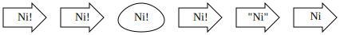

本文代码运行环境:
- windows10
- python3.6
- jupyter notebook
安装
graphviz为Graphviz图形绘制软件提供了一个简单的纯Python接口。它在Python 2.7和3.4+下运行。要使用pip安装它，请运行以下命令：
1 | pip install graphviz |
依赖
graphviz有一个同名依赖graphviz, 这是一个c开发的软件包, 可以通过命令行调用。它的安装很简单, 如果在windows下, 只需要下载二进制包进行安装即可, 具体过程参考这篇文章的安装Graphviz部分。
基本用法
graphviz模块提供两个类：Graph和Digraph。他们使用DOT语言为无向和有向图创建图形描述。他们有相同的API。
通过实例化新的Graph或Digraph对象来创建图形：
1 | from graphviz import Digraph |
'// 这是一个有向图\ndigraph {\n}'
它们的构造函数允许设置图形的name，DOT代码的filename，源代码行的注释等。
使用node（）和edge（）或edges（）方法将节点和边添加到图形对象：
node()方法第一个参数是name, 第二个参数是labeledges()方法可以一次添加多个边, 每个边用字符串表示, 比如AB表示从A到B的边edge()方法一次添加一个边
1 | dot = Digraph(comment='这是一个有向图') |
// 这是一个有向图
digraph {
A [label="作者"]
B [label="医生"]
C [label="律师"]
A -> B
A -> C
B -> C
}
使用render方法将保存dot源码, 并且会渲染图形, 使用view=True参数可以自动打开应用程序以便浏览生成的图:
1 | # 将dot源码保存到文件:output-graph.gv |
'output-graph.gv.pdf'
除了PDF, 还可以生成其他格式, 比如png:
1 | dot.format = 'png' |
'output-graph.gv.png'
由于这是jupyter notebook环境, 我们直接使用notebook展示生成的图片即可:
1 | from IPython.display import display, Image |
字体乱码
我们可以看到中文的label无法正确显示在图中, 因为默认的字体并不支持中文, 需要我们为node设置字体, 比如我们设置成黑体:
1 | dot = Digraph(comment='这是一个有向图') |
(dot.exe:10280): Pango-WARNING **: couldn't load font "Heiti Not-Rotated 14", falling back to "Sans Not-Rotated 14", expect ugly output.
piped输出
为了直接获取Graphviz软件渲染结果, 而不是让它保存到文件中, 我们可以使用pipe()方法, 比如我们可以直接获取渲染后的svg源码:
1 | from graphviz import Graph |
"http://www.w3.org/Graphics/SVG/1.1/DTD/svg11.dtd">
jupyter notebook中显示
因为Graph和Bigraph类都有_repr_svg_()方法, 因此他们可以直接显示在notebook中, 而不需要做任何处理, 例如, 上面的svg图, 可以直接显示:
1 | h |
显示风格
使用graph_attr, node_attr, edge_attr参数, 你可以更改图中节点和边的显示样式:
1 | ps = Digraph(name='pet-shop', node_attr={'shape': 'plaintext'}) |

创建完毕以后, 你可以更改这些样式:
1 | ps.graph_attr['rankdir'] = 'LR' |
属性
我们可以直接更改图中所有节点和边的属性, 相当于全局配置, 只要使用attr方法即可:
1 | ni = Graph('ni') |
使用引号和HTML作为label
在label中使用引号需要使用转义字符\:
1 | ni.node('5', '\"Ni\"') |
在label中使用html可以使用< >将html内容括起来, 比如, 我们可以使用下标sub:
1 | ni.node('6', '<N<sub>i</sub>>') |

子图和集群
Graph和Bigraph'对象都有subgraph()`方法用于添加子图, 它有两种用法:
- 可以直接添加一个Graph或者Bigraph对象:
1 | p = Graph(name='parent') |

- 使用
with代码块:
1 | p = Graph(name='parent') |
引擎
渲染引擎可以选择多种, 而不仅仅是dot, 比如你可以使用neato:
1 | g = Graph(engine='neato') |
或者也可以直接更改渲染引擎:
1 | g.engine = 'circo' |
添加dot语句
有些应用场景是需要使用已经写好的dot语句的, 这时候我们可以直接调用body.append方法来追加dot语句:
1 | rt = Digraph() |
使用dot文件和源码
我们可以直接使用Source类来直接实例化一个Source对象, 传入的参数就是dot源码, 然后可以调用render方法渲染成图片:
1 | from graphviz import Source |
'
我们还可以直接使用from_file方法来从一个dot文件实例化:
1 | src = Source.from_file('output-graph-font.gv') |
(dot.exe:14100): Pango-WARNING **: couldn't load font "Heiti Not-Rotated 14", falling back to "Sans Not-Rotated 14", expect ugly output.
使用临时文件浏览图
很多时候我们要多次浏览绘制的图, 但是又不想保存这个文件, 那么我们可以使用临时文件保存生成的结果:
1 | import tempfile |
'C:\\Users\\syd\\AppData\\Local\\Temp\\tmp48i7e5z2.gv.pdf'
注意
本文由jupyter notebook转换而来, 您可以在这里下载notebook
有问题可以直接在下方留言
或者给我发邮件675495787[at]qq.com
请记住我的网址: mlln.cn 或者 jupyter.cn